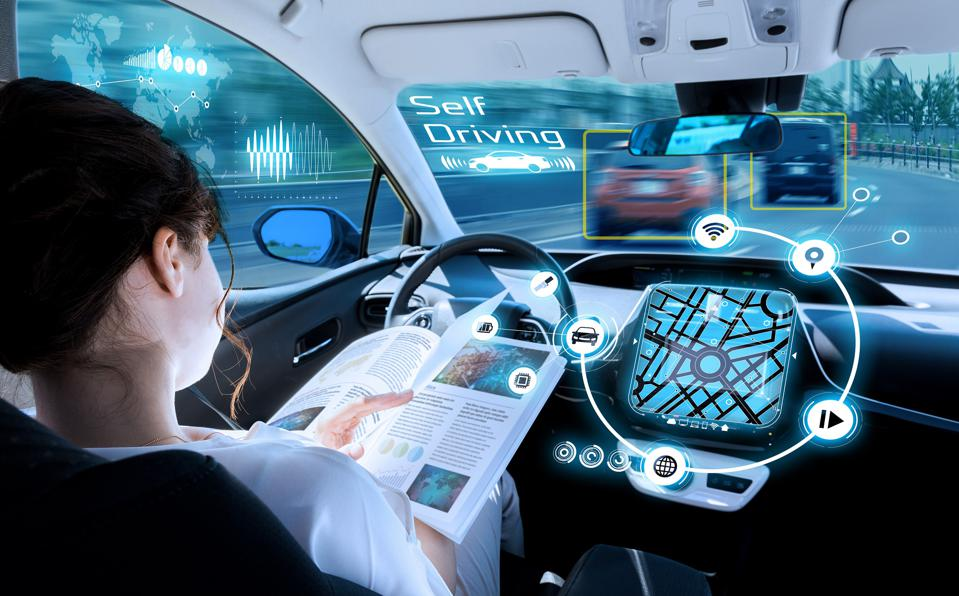
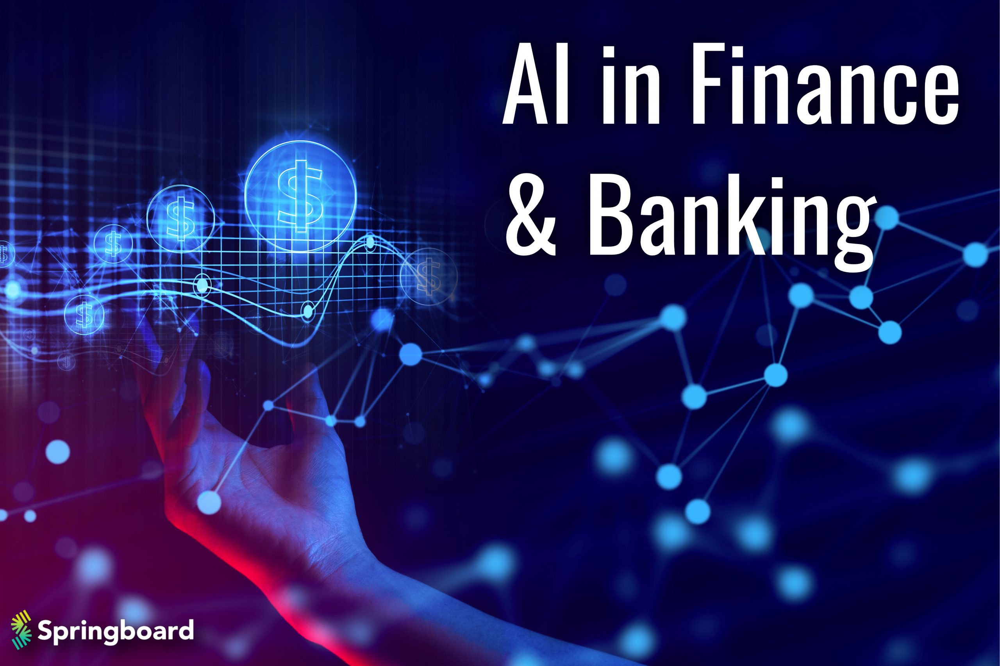

While a number of definitions of artificial intelligence (AI) have surfaced over the last few decades, John McCarthy offers the following definition in this 2004 paper (PDF, 106 KB) (link resides outside IBM), " It is the science and engineering of making intelligent machines, especially intelligent computer programs. It is related to the similar task of using computers to understand human intelligence, but AI does not have to confine itself to methods that are biologically observable."
AI is incorporated into a variety of different types of technology.
This has helped fuel an explosion in efficiency and opened the door to entirely new business opportunities for some larger enterprises. Prior to the current wave of AI, it would have been hard to imagine using computer software to connect riders to taxis, but today Uber has become one of the largest companies in the world by doing just that. It utilizes sophisticated machine learning algorithms to predict when people are likely to need rides in certain areas, which helps proactively get drivers on the road before they're needed. As another example, Google has become one of the largest players for a range of online services by using machine learning to understand how people use their services and then improving them. In 2017, the company's CEO, Sundar Pichai, pronounced that Google would operate as an "AI first" company.
Automation.
Machine learning.

Natural language processing
.jpg)
Robotics.
Self-driving cars.
Machine vision.
AI in finance.
AI in education.
AI in business.